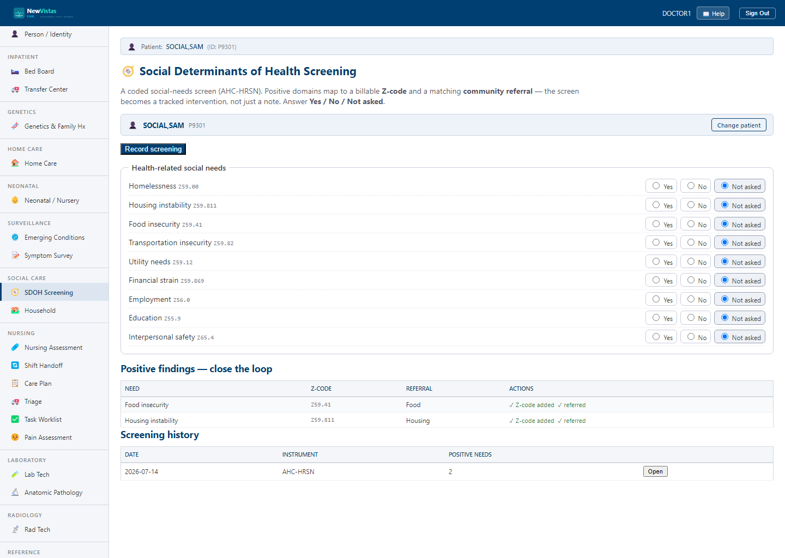

SDOH Screening — the social vital signs
Nursing is often the front door for the social-needs screen (/sdoh-screening) — a
coded AHC-HRSN review of housing, food, transportation, utilities, safety, financial strain,
employment, and education. Answer each Yes / No / Not asked; "Not asked" is never
counted as a negative, so it's honest to finish the screen over more than one visit.

What you can do
- Record the screening — this computes which needs are positive and maps each to a Z-code and a suggested referral.
- Create a referral for a positive need (Food, Housing, …) — it opens in the
Social Work queue. You can do this with your
ORELSEaccess. - Placing the diagnosis Z-code on the problem list needs the
GMPL PROBLEMkey — a provider handles that half if you don't hold it.
The point of the coded screen: a social need you record honestly today becomes a tracked
intervention (a code + a referral) rather than a line in a note nobody can act on.